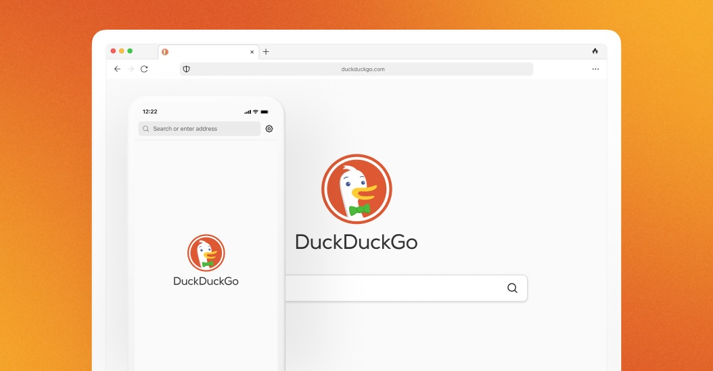

Bound the work
Pick one backend slice, such as instant answers, Duck.ai routing, subscription reliability, or private ads quality.
Prepared for DuckDuckGo engineering
Saw you are hiring an Engineering Director, Backend. Here is how Elinext would keep one senior backend stream moving while Aitor and the team find the right long-term leader.

The backend director search says DuckDuckGo is scaling core systems, not just adding seats. That work touches private search, Duck.ai, privacy-respecting ads, and instant answers. The hard part is keeping delivery fast while every change respects your trust model. If current leads carry too much, roadmap calls slow down and small browser or subscription bugs feel like privacy issues.
A dedicated Elinext squad works under DuckDuckGo product and engineering leads, with one narrow backend stream and weekly demos.
Pick one backend slice, such as instant answers, Duck.ai routing, subscription reliability, or private ads quality.
Define data boundaries first, so engineers work with safe fixtures, logs, mocks, and reviewed access paths.
Deliver small backend changes with test notes, demo notes, and clear tradeoffs for DuckDuckGo leads.
Document decisions, open risks, and regression checks before the permanent backend director takes the chair.
Elinext is a full-cycle software development company since 1997, with about 700 in-house specialists and no freelancers. For DuckDuckGo, the fit is senior backend, QA automation, AI/ML, and a dedicated team model under your leads. ISO 27001 and ISO 9001 matter when privacy and quality cannot be loose. We have delivered for named customers such as Siemens, Broadcom, Volkswagen, TRUMPF, and TUI. That lets us support the squad above without asking DuckDuckGo to change how it builds trust.

Elinext built backend search and data sync with Java, Elasticsearch, Docker, and Kubernetes for a trust-heavy banking product.
Read the case study
A long-running QA team helped a complex infrastructure product improve quality and test coverage across many modules.
Read the case study